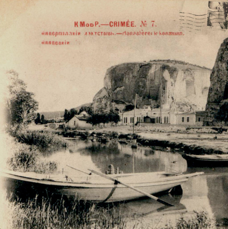
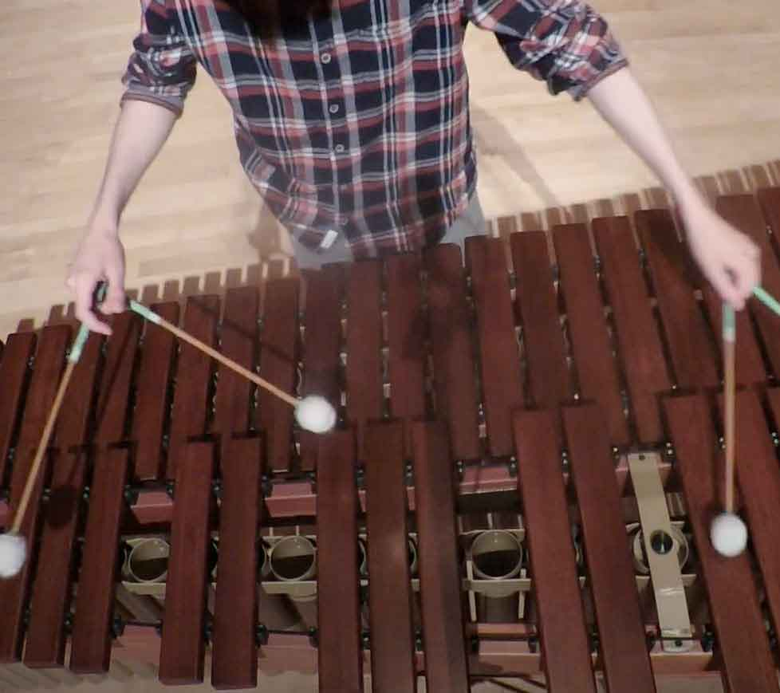
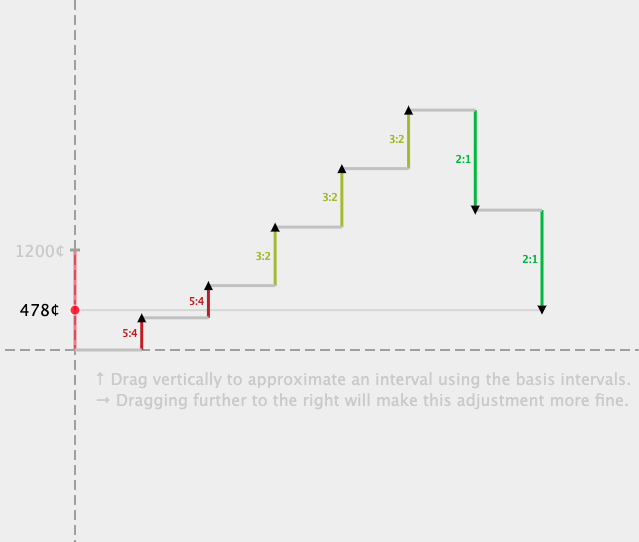

stephen karukas
music + software
I write music and play drums and percussion. I release electronic music as kmodp and produce music for Traveling Boyfriend.
listen to my instrumental music
FAQ: what is my birth year? Click here.
☷ recent projects
- 🥁 April 29, 2026 — Bongo Funhouse (improvised percussion + electronics) @ Wayward Music Series (Seattle).
- 🥁 April 24, 2026 — Splinter Percussion live radio show on Classical KING Northwest Focus Live (Seattle).
- 🎷 March 2026 — Premiere of new bari sax + electronics arrangement of Third Rail / Revelation by Andrew Hutchens at NASA 2026.
- 💂 December 2025 — Hey, I moved to London to help self-driving cars drive themselves better.
- 💿 Girlhood (November 2025) — single by Traveling Boyfriend (arrangement / production).
- 🥁 September 20, 2025 — Splinter Percussion @ Wayward Music Series.
- 🥁 August 29, 2025 — Splinter Percussion @ Live Music Project's 11th Anniversary
- 💿 [inconnu] (March 2025) — electronic music collaboration between kmodp and Køemner.
- 🥁 March 21, 2025 — Bongo Funhouse (improvised percussion trio) @ Wayward Music Series.
- 💿 Crimée No. 7 (February 2024) — [as kmodp] album of electronic music.
- 💿 Rain on the Sea (February 2024) — single by Traveling Boyfriend (arrangement / production).
- 💿 City of Water (April 2023) — [as kmodp] collaborative EP with Cellartone and Luc Jardie.